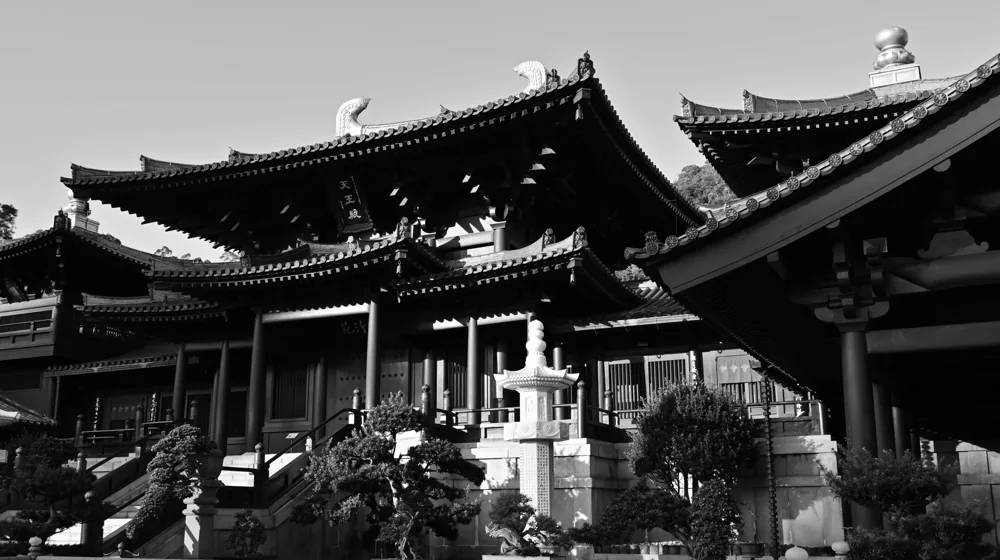

산만한 업무, 사찰 체험으로 초집중! 몰입 높이는 3가지 비법과 준비물
사진: Kemi Lo / Pexels (무료 이미지, 출처 표기)
산만한 업무, 사찰 체험으로 초집중! 몰입 높이는 3가지 비법과 준비물

일상의 산만함 속에서 업무 집중도를 높이고 싶으신가요? 템플스테이는 단순히 쉬는 것을 넘어, 외부 자극을 최소화하고 내면의 몰입을 끌어내는 특별한 업무 환경이 될 수 있습니다. 평소와 다른 환경에서 생산성을 극대화하고 싶은 분들을 위해, 업무 집중도를 높이는 사찰 체험의 핵심 전략과 필수 준비물을 정리해 드립니다.
업무 집중형 사찰 체험, 어떻게 다를까?
일반적인 템플스테이(Temple Stay, 사찰에서 생활하며 불교문화와 수행을 체험하는 프로그램)는 명상, 예불, 발우공양 등 전통문화 체험에 집중합니다. 하지만 '업무 집중형' 템플스테이는 사찰의 고요하고 평화로운 분위기를 활용해 방해 없는 환경에서 업무나 학업에 몰입하는 것을 목표로 합니다. 스마트폰 사용을 최소화하고, 자연 속에서 정신을 맑게 하는 것이 특징입니다.
이러한 체험은 새로운 아이디어를 얻거나, 복잡한 프로젝트에 집중할 때 특히 효과적입니다. 도시의 소음과 디지털 기기의 알림에서 벗어나 온전히 나 자신과 마주하며 높은 집중력을 경험할 수 있습니다.
나에게 맞는 사찰 고르기: 조용함과 환경이 핵심
업무 집중을 위한 사찰을 선택할 때는 몇 가지 기준을 고려해야 합니다. 모든 템플스테이가 업무에 적합한 환경을 제공하는 것은 아니기 때문입니다.
- 조용함과 독립성: 번잡한 도심에서 떨어진 산속 사찰이나, 개별 공간이 확보되는 곳이 좋습니다. 인기 많은 사찰보다는 상대적으로 방문객이 적은 곳을 고려하세요.
- 인터넷 환경: 업무 특성상 인터넷이 필수라면, Wi-Fi 제공 여부를 반드시 확인해야 합니다. 다만, 완전한 디지털 디톡스를 원한다면 오히려 인터넷이 없는 곳을 선택할 수 있습니다. 템플스테이 통합 정보센터(www.templestay.com)에서 각 사찰의 프로그램과 시설 정보를 확인할 수 있습니다.
- 개방형 프로그램 vs. 자유형 프로그램: 정해진 스케줄이 많은 '체험형'보다는 자유롭게 시간을 활용할 수 있는 '휴식형' 또는 '자율형' 프로그램을 운영하는 사찰이 업무에 더 유리합니다.
- 전기 및 난방: 노트북 등 전자기기 사용을 위한 콘센트와 쾌적한 업무 환경을 위한 난방 시설이 잘 갖춰져 있는지도 확인하는 것이 좋습니다.
2026년 11월 기준, 일부 사찰은 '나홀로 템플스테이'나 '산사에서 나를 찾다'와 같은 이름으로 개인적인 시간 활용에 초점을 맞춘 프로그램을 운영하고 있습니다. 정확한 사항은 예약 전 해당 사찰에 직접 문의하거나 공식 홈페이지에서 다시 확인하시길 권장합니다.
몰입을 극대화하는 사찰 체험 활용 전략
단순히 사찰에 머무는 것만으로는 업무 집중도를 높이기 어렵습니다. 사찰의 분위기를 업무에 적극적으로 활용하는 전략이 필요합니다.
- 디지털 기기 사용 최소화: 업무에 필요한 최소한의 기기만 사용하고, 스마트폰은 비행기 모드로 전환하거나 숙소에 두고 업무에 집중합니다. 불필요한 알림은 모두 끄세요.
- 사찰 루틴 활용: 새벽 예불(새벽 기도)이나 공양(식사) 시간에 참여하여 일정한 생활 리듬을 만듭니다. 이러한 규칙적인 생활은 몸과 마음을 정돈하고, 업무 몰입도를 높이는 데 도움을 줍니다.
- 명상 및 걷기 명상: 업무 중간중간 짧은 명상 시간을 갖거나, 사찰 주변을 걸으며 명상하는 시간을 통해 머리를 식히고 새로운 에너지를 얻을 수 있습니다. 이는 창의적인 사고와 문제 해결에 긍정적인 영향을 줍니다.
- 업무 시간과 휴식 시간 명확히 구분: 사찰 내에서도 업무에만 집중하는 시간과 휴식 및 체험에 참여하는 시간을 명확히 분리하여 효율성을 높입니다. 예를 들어, 오전에 집중적으로 업무를 보고, 오후에는 사찰 프로그램을 체험하는 식입니다.
필수 준비물 체크리스트: 불편함 없이 몰입하기
업무 집중형 사찰 체험을 성공적으로 마치기 위한 준비물은 일반 템플스테이와는 조금 다릅니다.
- 업무용 기기: 노트북, 충전기, 보조배터리, 필요한 경우 휴대용 모니터나 키보드.
- 필기구: 아이디어나 생각을 정리할 수 있는 노트와 펜. 디지털 기기를 벗어나 아날로그 방식으로 정리하는 것이 새로운 관점을 제공할 수 있습니다.
- 편안한 복장: 움직임이 자유롭고 단정한 복장. 사찰 예절을 지키면서도 편안하게 업무에 집중할 수 있는 옷을 여러 벌 준비하세요.
- 개인 세면도구 및 수건: 사찰에서 제공되지 않을 수 있으니 꼭 챙겨야 합니다.
- 개인 물통: 수시로 물을 마시며 집중력을 유지하는 데 도움이 됩니다.
- 작은 간식 및 차: 업무 중 에너지를 보충할 수 있는 간단한 간식이나 몸을 따뜻하게 해줄 차.
- 귀마개/노이즈캔슬링 이어폰: 주변의 작은 소리에도 예민하다면 몰입을 돕는 유용한 도구입니다.
- 읽을거리: 업무 관련 서적이나 영감을 줄 수 있는 책.
성공적인 사찰 체험을 위한 유의사항
성공적인 업무 집중형 사찰 체험을 위해서는 몇 가지 유의사항을 염두에 두어야 합니다.
- 사찰 규율 준수: 사찰은 종교 시설이므로, 기본적인 예절과 규율을 존중해야 합니다. 큰 소리로 통화하거나 다른 방문객에게 방해가 되는 행동은 삼가세요.
- 개방적인 마음: 기대와 다른 상황이 발생할 수도 있습니다. 유연한 마음으로 주어진 환경에 적응하려는 태도가 중요합니다. 완벽한 업무 환경을 기대하기보다는, 새로운 경험 자체에 의미를 두는 것이 좋습니다.
- 건강 관리: 낯선 환경에서의 숙박은 피로도를 높일 수 있습니다. 충분한 수면과 휴식을 취하며 건강을 관리하는 것도 업무 효율성 유지에 필수적입니다.
업무 집중형 사찰 체험은 일상의 번잡함에서 벗어나 오롯이 나 자신과 업무에 몰입할 수 있는 특별한 기회를 제공합니다. 위 가이드를 참고하여 당신에게 맞는 사찰을 선택하고, 성공적인 업무 집중 경험을 만들어 보시길 바랍니다.
🔗 이 글도 함께 보면 좋아요: 일도 쉬엄쉬엄, 사찰 와이파이 업무환경 예약부터 핵심 준비물까지
관련 추천 상품
사찰 체험 용품, 템플스테이 준비물 관련 인기 상품 보러가기
이 포스팅은 쿠팡 파트너스 활동의 일환으로, 이에 따른 일정액의 수수료를 제공받습니다.